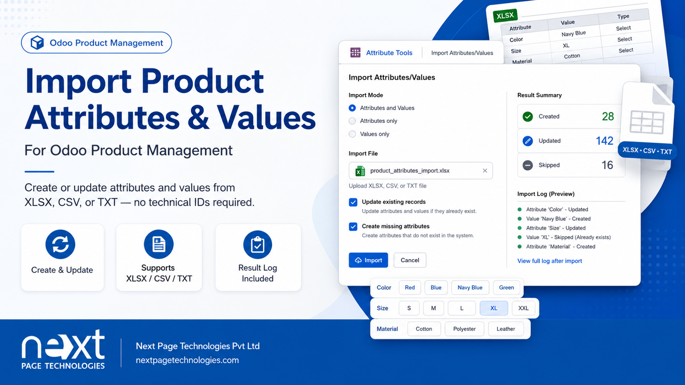
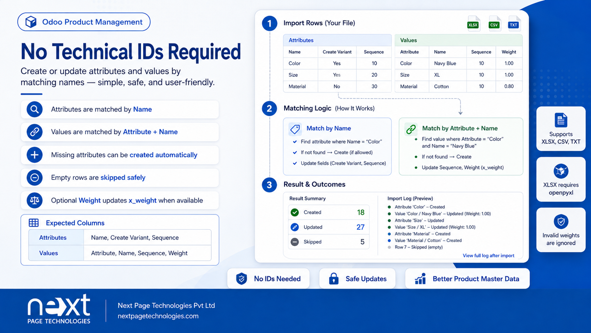
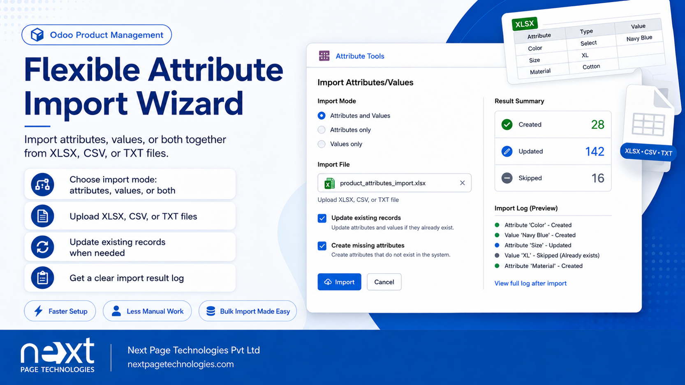

Odoo Products
Corrugation Attribute Import adds an Odoo wizard for importing product attributes and product attribute values from XLSX, CSV, or TXT files. It works in Odoo product configuration and helps users create or update attribute data with readable names instead of technical IDs.
This addon provides a popup import wizard for product attributes and values. It supports separate import modes for attributes only, values only, or attributes and values together. The wizard maps accepted column headers, processes the uploaded file, and shows a result log with created, updated, and skipped records.
Creates or updates product attributes by name, create-variant mode, and sequence.
Creates or updates product attribute values by attribute name, value name, and sequence.
Reads XLSX workbooks and CSV/TXT files from the wizard upload field.
Allows users to import attributes and values together, attributes only, or values only.
Can update existing attributes and values when matched by name, or skip them when updating is disabled.
Shows totals for created, updated, and skipped rows after the import action completes.
No separate configuration screen is added. Install the addon, make sure the Product app is available, and open the Attribute Tools menu to use the import wizard. XLSX imports require the Python package openpyxl to be installed on the Odoo server.
The import wizard lets users upload a file, select the import mode, control updates to existing records, and allow missing attributes to be created while importing values.

The addon processes attribute and value rows by readable names and returns a clear import result log showing created, updated, and skipped records.

Next Page Technologies Pvt Ltd
https://nextpagetechnologies.com
Next Page Technologies Pvt Ltd
https://nextpagetechnologies.com